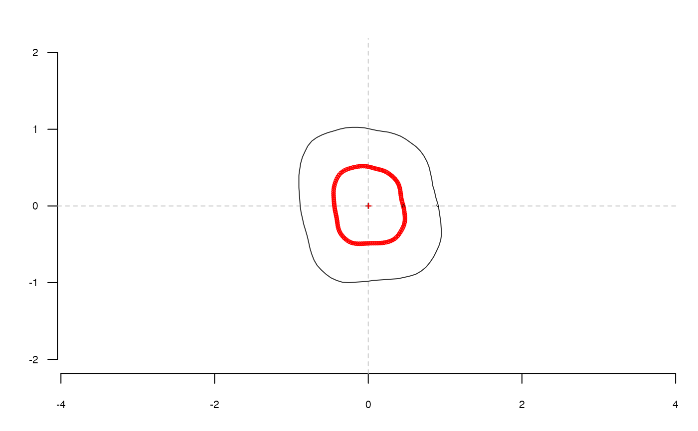

sfourier computes radii variation Fourier analysis from a matrix or a
list of coordinates where points are equally spaced aong the curvilinear abscissa.
sfourier(x, nb.h) # S3 method for default sfourier(x, nb.h) # S3 method for Out sfourier(x, nb.h)
| x | A |
|---|---|
| nb.h |
|
A list with following components:
an vector of \(a_{1->n}\) harmonic coefficients
bn vector of \(b_{1->n}\) harmonic coefficients
ao ao harmonic coefficient
r vector of radii lengths
The implementation is still quite experimental (as of Dec. 2016)
Renaud S, Michaux JR (2003): Adaptive latitudinal trends in the mandible shape of Apodemus wood mice. J Biogeogr 30:1617-1628.
Other sfourier: sfourier_i,
sfourier_shape
molars[4] %>% coo_center %>% coo_scale %>% coo_interpolate(1080) %>% coo_slidedirection("right") %>% coo_sample(360) %T>% coo_plot(zoom=2) %>% sfourier(16) %>% sfourier_i() %>% coo_draw(bor="red", points=TRUE)